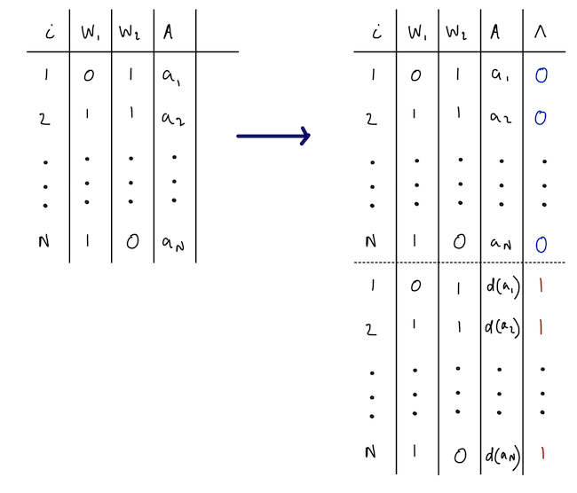

估计量
Estimators · Beyond the ATE 工作坊中译
来源：Nick Williams、Kara Rudolph、Iván Díaz，Beyond the ATE · Estimators （GitHub 仓库），GPL-3.0 许可。 本页为中文翻译，非原文；按 GPL-3.0 保留原作者署名与许可证，并标明这是修改（翻译）后的版本。 公式与算法步骤按原文逐字保留；原文用自定义 CSS 的「algorithm」方框在本站改用提示框呈现， webR 交互代码块改为静态代码块，不重新执行。
\[ \renewcommand{\P}{\mathsf{P}} \newcommand{\m}{\mathsf{m}} \newcommand{\p}{\mathsf{p}} \newcommand{\q}{\mathsf{q}} \newcommand{\bb}{\mathsf{b}} \newcommand{\g}{\mathsf{g}} \newcommand{\rr}{\mathsf{r}} \newcommand{\IF}{\mathbb{IF}} \newcommand{\dd}{\mathsf{d}} \newcommand{\Pn}{\mathsf{P}_n} \newcommand{\E}{\mathsf{E}} \]
小结一下，到目前为止我们已经：
定义了因果参数 \(\theta\)，它表示在函数 \(\dd(a_t, h_t, \epsilon)\) 所蕴含的一般化 假设干预下的结局 \(Y\)；
给出了必要的假设，用以识别「把 \(A_t\) 替换为 \(\dd_t\) 的输出（依次作用于处理的 自然取值）」这一干预下 \(Y\) 的期望。
参数 \(\theta\) 是一个函数：只要我们知道各变量的分布（例如结局回归），就能把它算出来。 但我们并不知道这个分布，因此需要从观测数据的样本中估计它。下面讨论如何从样本估计 参数 \(\theta\)。
序贯回归估计量
一种可行的估计量，就是对识别结果做代入式（plug-in）估计。这种估计量常被称为 G-computation，或迭代条件期望（iterative conditional expectation, ICE）， 其做法就是直接估计识别结果中描述的那些回归。该算法也可以这样描述：
算法
初始化 \(\hat \m_{\tau +1} = Y_i\)。
对 \(t = \tau, ..., 1\)：
用事先设定的参数模型，把 \(\hat \m_{i,t+1}\) 对 \(\{A_{i, t}, H_{i,t}\}\) 做回归。 这给出一个预测模型 \(\hat \m_t(a_t, h_t)\)。
把 \(A_{i,t}\) 换成 \(A^{\dd}_{i,t}\)，用该模型生成预测值。 记这些预测值为 \(\hat \m_t(A_{i, t}^\dd, H_{i,t})\)。
重复（迭代）上面两步，直到在第一个时点生成预测值 \(\hat \m_1(A_{i, 1}^\dd, H_{i,1})\)。
取最终估计为 \(\hat{\theta} = \frac{1}{n}\sum_{i=1}^n \hat \m_1(A_{i, 1}^\dd, H_{i,1})\)。
对步骤 1–2 做 bootstrap 计算标准误；若可用，也可用 Delta 方法。
代入式估计量有其优点：它的估计值一定落在结局的有效取值范围内，而且估计过程简单。 话虽如此，它的缺点也很突出：
- 在多时点研究中，调整集会迅速膨胀。例如，考虑一项每个时点测量 3 个协变量、 共 10 个时点的研究。虽然每个时点只有 3 个协变量，但 \(Y\) 的回归中协变量个数 已经是 33 个。
- 设想要为一个含 33 个变量的参数模型（例如 logistic、Cox）正确设定形式 （比如纳入恰当的交互项），难度可想而知。
| 优点 ✅ | 缺点 ❌ |
|---|---|
| 实现简单 | 相合性要求所有回归都被正确估计 |
| 是代入式估计量 | bootstrap 的正确性要求事先设定参数模型 |
密度比估计
接下来的三种估计量都依赖于估计密度比
\[ r_t(a_t, h_t) = \frac{\g_t^\dd(a_t \mid h_t)}{\g_t(a_t \mid h_t)}. \]
回忆 \(\g_t^\dd(a_t \mid h_t)\) 表示干预后处理的密度，即 \(\dd(A_t, H_t)\) 的密度在 \(a_t\) 处取值；\(\g_t(a_t \mid h_t)\) 表示无干预时观测处理的密度。
本工作坊中我们常把这个比值称为干预机制（intervention mechanism）。 \(r_t(a_t, h_t)\) 的估计在 lmtp 中已完全自动化，对用户不可见。 要用 lmtp，并不需要完全弄懂这一过程！
我们可以用一个分类技巧直接估计这个密度比。做法是构造一个含 \(2n\) 个观测的增广数据集。 在这个新数据集中，结局是我们自己构造的新变量 \(\Lambda\)（定义见下）， 预测变量则是 \(A_t\) 和 \(H_t\)。于是时点 \(t\) 的数据结构被重新定义为
\[ (H_{\lambda, i, t}, A_{\lambda, i, t}, \Lambda_{\lambda, i} : \lambda = 0, 1; i = 1, ..., n) \]
\(\Lambda_{\lambda, i} = \lambda_i\) 用于标记重复值。即：若观测 \(i\) 是复制出来的值， 则 \(\Lambda_i =1\)，否则 \(\Lambda_i =0\)。
对同一个 \(i\) 的所有重复观测 \(\lambda\in\{0,1\}\)，\(H_{\lambda, i, t}\) 都相同。
对所有原始观测（\(\lambda = 0\)），\(A_{\lambda=0, i, t}\) 等于观测到的暴露值 \(A_{i, t}\)。
对所有复制观测（\(\lambda=1\)），\(A_{\lambda=1, i, t}\) 等于干预 \(\dd\) 下的暴露值 \(A^{\dd}_{i,t}\)。

接着我们在这个数据集中估计以 \((A, H)\) 为条件的 \(\Lambda=1\) 的条件概率， 再除以相应的 \(\Lambda=0\) 的条件概率估计。具体地，记 \(P^\lambda\) 为增广数据集中数据的 分布，我们有：
\[ \begin{align*} r_t(a_t, h_t) &= \frac{\g_t^\dd(a_t \mid h_t)}{\g_t(a_t \mid h_t)}\\ &= \frac{P^\lambda(a_t, h_t \mid \Lambda = 1)}{P^\lambda(a_t, h_t \mid \Lambda = 0)}\\ &= \frac{P^\lambda(\Lambda = 1\mid a_t,h_t)P^\lambda(a_t,h_t)}{P^\lambda(\Lambda = 1)}\times \frac{P^\lambda(\Lambda = 0)}{P^\lambda(\Lambda = 0\mid a_t,h_t)P^\lambda(a_t,h_t)} \\ &=\frac{P^\lambda(\Lambda = 1\mid a_t,h_t)}{P^\lambda(\Lambda = 0\mid a_t, h_t)} \end{align*} \]
示例
考虑下面这个例子：我们从如下数据生成机制中模拟 1000 个观测：
\[\begin{align} L_1 &\sim \text{Normal}(0, 1) \\ A_1 &\sim \text{Bernoulli}(\text{logit}^{-1}(-1 + 1.5L_1))\\ L_2 &\sim \text{Normal}(0, 1) \\ A_2 &\sim \text{Bernoulli}(\text{logit}^{-1}(-1 + 1.5L_2 + 2A_1))\\ Y &\sim \text{Normal}(-1 - 1.2L_1 + 2.4A_1 - 2L_2 + 1.2A_2) \end{align}\]
数据已在后台以 foo 的名字载入 R。我们将用密度比分类技巧，估计如下干预下的密度比 \(r_t(a_t, h_t)\)： \[
\dd(a_t, \epsilon_t) = \begin{cases}
0 &\text{ if } \epsilon_t < 0.5 \text{ and } a_t = 1 \\
a_t &\text{ otherwise.}
\end{cases}
\] 该干预下的真值约为 \(-0.37\)。首先构造增广数据；然后把 \(\Lambda\) 对 \(A_t\) 和 \(H_t\) 做回归，并用预测出的优势（odds）作为密度比的估计。
set.seed(786543)
n <- 1000
l0 <- rnorm(n)
a1 <- rbinom(n, 1, plogis(-1 + l0*1.5))
l1 <- rnorm(n)
a2 <- rbinom(n, 1, plogis(-1 + l1*1.5 + a1*2))
y <- rnorm(n, -1 - 1.2*l0 + 2.4*a1 - 2*l1 + 1.2*a2)
foo <- data.frame(
L1 = l0,
A1 = a1,
L2 = l1,
A2 = a2,
Y = y
)# 把干预定义成一个函数
d <- function(a) {
epsilon <- runif(length(a))
ifelse(epsilon < 0.5 & a == 1, 0, a)
}
# 建一个空矩阵存放密度比
density_ratios <- matrix(NA, nrow = n, ncol = 2)
for (t in 1:2) {
a <- c("A1", "A2")[t]
# 复制数据
shifted <- foo
# 在复制出的数据中，按 d 修改处理
shifted[[a]] <- d(foo[[a]])
# 在原始数据和修改后的数据中设定 lambda 的取值
foo$lambda <- 0
shifted$lambda <- 1
# 把原始数据和修改后的数据摞在一起
density_ratio_data <- rbind(foo, shifted)
# 把 lambda_t 对 A_t、H_t 做回归
parents <- unlist(lapply(1:t, \(x) paste0(c("L", "A"), x)))
formula <- as.formula(paste("lambda ~", paste(parents, collapse = "+")))
density_ratio_model <- glm(formula, data = density_ratio_data, family = binomial)
# 计算估计出的优势
prob_lambda_1 <- predict(density_ratio_model, foo, type = "response")
density_ratios[, t] <- prob_lambda_1 / (1 - prob_lambda_1)
}
summary(density_ratios)逆概率加权
我们把这个估计量称为 IPW，是因为它与二值处理的逆概率加权估计量很相似； 不过更准确的叫法其实是「重加权估计量」。它基于如下另一种识别公式：
\[ \theta = \E \bigg[ \bigg\{\prod_{t=1}^\tau r_t(a_t, h_t) \bigg\} Y \bigg] \]
算法如下：
算法
用密度比分类技巧和事先设定的参数模型，构造 \(r_{i,t}(a_t, h_t)\) 的估计。
定义权重 \(w_{i} = \prod_{t=1}^\tau r_{i,t}(a_t, h_t)\)。
取最终估计为 \(\hat{\theta} = \frac{1}{n}\sum_{i=1}^n \hat{w}_{i}\times y_i\)。
对步骤 1–3 做 bootstrap 计算标准误。
示例
让我们用上一例中估计出的密度比来应用 IPW 估计量。先把密度比连乘得到权重。
weights <- apply(density_ratios, 1, prod)估计值就是「估计权重 × 观测结局」的样本均值。
mean(weights*foo$Y)与序贯回归估计量类似，IPW 实现简单，但也有同样的缺陷。
| 优点 ✅ | 缺点 ❌ |
|---|---|
| 实现简单 | 相合性要求所有回归都被正确估计 |
| 不确定性量化要求事先设定参数模型 |
双稳健估计量
G-computation 和 IPW 估计量的不确定性量化，都要求用正确设定的参数模型来估计冗余参数 （nuisance parameters）。现在我们把注意力转向两种非参数估计量，它们允许我们使用 灵活的回归工具：
靶向最小损失估计量（targeted minimum-loss based estimator, TMLE），以及
序贯双稳健估计量（sequentially doubly-robust estimator, SDR）。
等一下，「估计量是双稳健的」到底是什么意思？
- 在单时点这个简单情形下，只要结局模型被相合估计或者处理（以及删失）模型被 相合估计，估计量就能给出目标参数的相合估计，这时称它是双稳健的。例如：
| 时点 | 1 |
| 处理 | 正确 |
| 结局 | 错误 |
- 在时变情形下，若存在某个时点 \(s\)，使得所有 \(t >s\) 的结局回归都被相合估计， 且所有 \(t \leq s\) 的干预机制（处理 + 删失）都被相合估计，则称该估计量是 \(\tau + 1\) 双稳健的。以 \(5\) 个时点为例：
| 时点 | 1 | 2 | 3 | 4 | 5 |
| 处理 | 正确 | 正确 | 错误 | 错误 | 错误 |
| 结局 | 错误 | 错误 | 正确 | 正确 | 正确 |
- 序贯双稳健（也常称为 \(2^\tau\)-多重稳健）意味着：只要在每一个时点上， 结局模型或干预机制（处理 + 删失）二者至少有一个被相合估计，估计量就是相合的。 例如：
| 时点 | 1 | 2 | 3 | 4 | 5 |
| 处理 | 正确 | 错误 | 正确 | 错误 | 正确 |
| 结局 | 错误 | 正确 | 错误 | 正确 | 错误 |
注意不要把双稳健相合性和速率双稳健性（rate double robustness）混为一谈。 双稳健相合性指的是我们刚刚描述的那些性质；速率双稳健性指的是这样一种性质： 估计量的误差是两个冗余函数估计误差的乘积。
从实践上看，速率双稳健性也许更有意思，因为它意味着：即便两个模型都不正确， 估计量的误差仍可能很小！
有效影响函数
构造 TMLE 和 SDR 的关键是有效影响函数（efficient influence function, EIF）。
EIF 刻画了所有正则且有效的估计量的渐近行为。
EIF 刻画了路径可微估计量的代入式估计量的一阶偏倚。
在引入 EIF 之前，还需要对 \(A\) 和 \(\dd\) 作一些额外假设。
处理 \(A\) 是离散的；或者
若 \(A\) 是连续的，则函数 \(\dd\) 是分段光滑可逆的。
迄今我们讲过的所有干预都满足这一性质。然而有一类常被关注的因果效应 （尤其在环境流行病学中）不满足分段光滑可逆，那就是阈值干预，例如
\[ \dd(a_t, h_t, \epsilon) = \begin{cases} a_t &\text{ if } a_t \leq u(h_t) \\ u(h_t) &\text{ otherwise.} \end{cases} \]
- 函数 \(\dd\) 不依赖于观测分布 \(\P\)。
- 这正是我们不能把这些方法用于优势比 IPSI、却可以用于风险比 IPSI 的原因。
这些假设保证了干预 \(\dd\) 下 \(\theta\) 的有效影响函数，具有与动态方案效应的影响函数 相似的结构。这使得多重稳健估计成为可能——而对依赖于 \(\P\) 的干预 \(\dd\)， 多重稳健估计一般是做不到的。
对一个观测 \(o\)，定义函数
\[ \phi_t: o \mapsto \sum_{s=t}^\tau \bigg( \prod_{k=t}^s r_k(a_k, h_k)\bigg) \big\{\m_{s+1}(a_{s+1}^\dd, h_{s+1}) - \m_s(a_s, h_s) \big\} + \m_t(a_t^\dd, h_t). \]
在非参数模型中，估计 \(\theta = \E[\m_1(A^\dd, L_1)]\) 的有效影响函数由 \(\phi_1(O) - \theta\) 给出。
在单时点情形下，影响函数简化为
\[ r(a, w)\{Y - \m(a,w)\} + \m(a^{\dd},w) - \theta. \]
靶向最小损失估计
TMLE 利用了「EIF 的期望等于零」这一事实。考虑我们刚刚定义的单时点情形的 EIF。
\[\begin{aligned} n^{-1} \sum_i^n[\phi_1(O) - \theta] &= n^{-1} \sum_i^n[r_i(a_i, w)\{Y_i - \m_i(a,w)\} + \m_i(a^{\dd},w) - \theta]\\ &= n^{-1} \sum_i^n[r_i(a, w)\{Y_i - \m_i(a,w)\}] + \theta - \theta \\ &= n^{-1} \sum_i^n[r_i(a, w)\{Y_i - \m_i(a,w)\}] \\ n^{-1} \sum_i^n[r_i(a, w)\{Y_i - \m_i(a,w)\}] &= 0 \end{aligned}\]关键的洞察在于认识到：\(r(a, w)\{Y - \m(a,w)\}\) 看起来就像一个得分方程 \(\sum_i r_i(a, w)\{Y_i - \m_i(a,w)\} = 0\)，而它可以用一个带权重 \(r_i(a, w)\)、 偏移项 \(m_i(a,w)\)、一个截距以及典则连接函数的 GLM 来求解。于是， 通过用 GLM 求解该得分方程，TMLE 就解出了 EIF 估计方程。
算法如下：
算法
用密度比分类技巧和你偏好的回归方法，构造 \(r_{i,t}(a_t, h_t)\) 的估计。
对 \(t = 1, ..., \tau\)，计算权重：\(w_{i,t} = \prod_{k=1}^t r_{i,k}(a_{i,k}, h_{i,k})\)
令 \(\tilde{\m}_{i,\tau +1}(A^\dd_{i,t+1}, H_{i,t+1}) = Y_i\)。
对 \(t = \tau, ..., 1\)：
把 \(\tilde{\m}_{i,t+1}(A^\dd_{i,t+1}, H_{i,t+1})\) 对 \(\{A_{i, t}, H_{i,t}\}\) 做回归。
用这个回归，分别基于 \(\{A_{i, t}, H_{i,t}\}\) 和 \(\{A^\dd_{i, t}, H_{i,t}\}\) 生成预测值。
把这两组预测值分别记为 \(\tilde{\m}_t(A_{i,t}, H_{i,t})\) 和 \(\tilde{\m}_t(A^\dd_{i,t}, H_{i,t})\)。
拟合广义线性倾斜（tilting）模型：
\(\text{link }\tilde{\m}^\epsilon_t(A_{i,t}, H_{i,t}) = \epsilon + \text{link }\tilde{\m}_{i,t}(A_{i,t}, H_{i,t})\)
权重取 \(w_{i,t}\)。
\(\text{link }\tilde{\m}_{i,t}(A_{i,t}, H_{i,t})\) 是偏移变量 （即参数值已知且等于 1 的变量）。
参数 \(\epsilon\) 可以这样估计：对 \(\tilde{\m}_{i,t+1}(A^\dd_{i,t+1}, H_{i,t+1})\) 跑一个只含截距项、 偏移项等于 \(\text{link }\tilde{\m}_{i,t}(A_{i,t}, H_{i,t})\)、 权重为 \(w_{i,t}\) 的广义线性模型。
设 \(\hat\epsilon\) 为极大似然估计，按下式更新估计：
\(\text{link }\tilde{\m}^\hat\epsilon_t(A^\dd_{i,t}, H_{i,t}) = \hat\epsilon + \text{link }\tilde{\m}_t(A^\dd_{i,t}, H_{i,t})\)
\(\text{link }\tilde{\m}^\hat\epsilon_t(A_{i,t}, H_{i,t}) = \hat\epsilon + \text{link }\tilde{\m}_t(A_{i,t}, H_{i,t})\)
更新 \(\tilde{\m}_{i,t} = \tilde{\m}^\hat\epsilon_{i,t}\)，令 \(t = t-1\)，继续迭代。
最终估计定义为 \(\hat\theta = \frac{1}{n}\sum_{i=1}^n\tilde{m}_{i, 1}(A^\dd_{i, 1}, L_{i, 1})\)。
示例
让我们用上一例中估计出的密度比来应用 TMLE。
# 先把密度比做累积连乘得到权重
weights <- t(apply(density_ratios, 1, cumprod))
predictions_natural <- matrix(NA, nrow = n, ncol = 2)
predictions_shifted <- matrix(NA, nrow = n, ncol = 2)
# 令 t = 2
# 因为 t + 1 = tau + 1，把第一个伪结局设为观测结局
m3_d <- foo$Y
# 把伪结局对观测数据做回归
fit2 <- glm(m3_d ~ A2 + L2 + A1 + L1, data = foo)
# 生成 t = 2 的预测值
predictions_natural[, 2] <- predict(fit2)
predictions_shifted[, 2] <- predict(fit2, mutate(foo, A2 = d(A2)))
# 执行靶向步骤
targeting_fit2 <- glm(m3_d ~ offset(predictions_natural[, 2]), weights = weights[, 2])
# 更新预测值
predictions_natural[, 2] <- predictions_natural[, 2] + coef(targeting_fit2)
predictions_shifted[, 2] <- predictions_shifted[, 2] + coef(targeting_fit2)
# 迭代，令 t - 1 = 1
# 新的伪结局是 t + 1 = 2 时移位下的靶向结局
m2_d <- predictions_shifted[, 2]
# 把伪结局对观测数据做回归
fit1 <- glm(m2_d ~ A1 + L1, data = foo)
# 生成 t = 2 的预测值
predictions_natural[, 1] <- predict(fit1)
predictions_shifted[, 1] <- predict(fit1, mutate(foo, A1 = d(A1)))
# 执行靶向步骤
targeting_fit1 <- glm(m2_d ~ offset(predictions_natural[, 1]), weights = weights[, 1])
# 更新预测值
predictions_natural[, 1] <- predictions_natural[, 1] + coef(targeting_fit1)
predictions_shifted[, 1] <- predictions_shifted[, 1] + coef(targeting_fit1)
mean(predictions_shifted[, 1])TMLE 的好处相当可观，因为它解决了 g-computation 和 IPW 的主要问题： TMLE 既是 \(\tau+1\) 双稳健的，也是速率双稳健的。
| 优点 ✅ | 缺点 ❌ |
|---|---|
| 是代入式估计量 | 不是序贯双稳健的 |
| \(\tau+1\) 双稳健 | |
| 可以使用机器学习 |
序贯双稳健估计量
回忆这个变换： \[ \phi_t: o \mapsto \sum_{s=t}^\tau \bigg( \prod_{k=t}^s r_k(a_k, h_k)\bigg) \big\{\m_{s+1}(a_{s+1}^\dd, h_{s+1}) - \m_s(a_s, h_s) \big\} + \m_t(a_t^\dd, h_t). \]
SDR 估计量基于这样一个核心事实：
\[ E[\phi_t(O)\mid A_t=a_t, H_t=h_t] \approx \m_t(a_t, h_t) \]
其中的逼近误差是「双稳健」的。这就给出了一条获得回归函数 \(\m_t(a_t, h_t)\) 的 双稳健估计的途径。
估计算法如下：
算法
用密度比分类技巧和你偏好的回归方法，构造 \(r_{i,t}(a_t, h_t)\) 的估计。
初始化 \(\phi_{\tau +1}(O_i) = Y_i\)。
对 \(t = \tau, ..., 1\)：
计算伪结局 \(\check{Y}_{i,t+1} = \phi_{t+1}(O_i)\)。
把 \(\check{Y}_{i,t+1}\) 对 \(\{A_{i, t}, H_{i,t}\}\) 做回归。记该回归为 \(\check\m_{t}\)。
继续迭代。
最终估计定义为 \(\hat\theta = \frac{1}{n}\sum_{i=1}^n\phi_1(O_i)\)， 其中 \(\phi_1\) 用 \(\hat r_t\) 和 \(\check\m_{t}\) 计算。
示例
让我们应用 SDR 估计量。同样，我们使用前面估计出的密度比。
predictions_natural <- matrix(NA, nrow = n, ncol = 2)
predictions_shifted <- matrix(NA, nrow = n, ncol = 3)
# 令 t = 2
# 因为 t + 1 = tau + 1，把第一个伪结局设为观测结局
m3_d <- foo$Y
predictions_shifted[, 3] <- m3_d
# 把伪结局对观测数据做回归
fit2 <- glm(m3_d ~ A2 + L2 + A1 + L1, data = foo)
# 生成 t = 2 的预测值
predictions_natural[, 2] <- predict(fit2)
predictions_shifted[, 2] <- predict(fit2, mutate(foo, A2 = d(A2)))
# 迭代，令 t - 1 = 1
# 用有效影响函数计算伪结局
m2_d <- density_ratios[, 2]*(m3_d - predictions_natural[, 2]) + predictions_shifted[, 2]
# 把伪结局对观测数据做回归
fit1 <- glm(m2_d ~ A1 + L1, data = foo)
# 生成 t = 1 的预测值
predictions_natural[, 1] <- predict(fit1)
predictions_shifted[, 1] <- predict(fit1, mutate(foo, A1 = d(A1)))
weights <- t(apply(density_ratios, 1, cumprod))
# 把估计值算成未中心化有效影响函数的样本均值
uc_eif <- rowSums(weights * (predictions_shifted[, 2:3] - predictions_natural[, 1:2])) +
predictions_shifted[, 1]
mean(uc_eif)与 TMLE 类似，SDR 估计量也解决了 g-computation 和 IPW 的主要问题。 此外，SDR 估计量还是序贯双稳健的。不过代价是：SDR 不是代入式估计量， 这意味着它可能给出落在结局有效取值范围之外的点估计。
| 优点 ✅ | 缺点 ❌ |
|---|---|
| \(\tau+1\) 双稳健 | 不是代入式估计量 |
| 序贯双稳健 | |
| 可以使用机器学习 |
如何选择估计量
一般而言，我们从不推荐使用 IPW 或序贯回归估计量。二者要得到有效的统计推断， 都要求事先正确设定参数模型 🙃。
相比之下，TMLE 和 SDR 估计量都是双稳健或序贯双稳健的，可以配合机器学习算法使用， 并在合理假设下仍保持 \(\sqrt{n}\)-相合。
| IPW | G-comp. | TMLE | SDR | |
|---|---|---|---|---|
| 使用结局回归 | ⭐ | ⭐ | ⭐ | |
| 使用倾向评分 | ⭐ | ⭐ | ⭐ | |
| 配合机器学习仍有有效推断 | ⭐ | ⭐ | ||
| 是代入式估计量 | ⭐ | ⭐ | ||
| \(\tau+1\) 双稳健 | ⭐ | ⭐ | ||
| 序贯双稳健 | ⭐ |
尽管 SDR 估计量对模型设定错误可能更稳健，TMLE 却有「是代入式估计量」这一优势。 正因如此，TMLE 的估计值一定落在结局的有效取值范围内。综合来看， 在 TMLE 与 SDR 之间选择时，可以遵循以下建议：
如果处理不随时间变化，用 TMLE。
如果处理随时间变化，且参数 \(\theta\) 有明确的界（例如概率）， 就要当心 SDR 估计量，最好用 TMLE。
交叉拟合
当用数据自适应算法估计冗余参数时，应当执行一个类似交叉验证的过程，称为交叉拟合 （cross-fitting）。交叉拟合有助于确保：
标准误是正确的，并且
能帮助减小估计量偏倚、改善置信区间的覆盖率。
交叉拟合在 lmtp 中已完全自动化。想了解更多，建议参阅 Chernozhukov 等 (2018)、 Dı́az (2020) 和 Zivich 和 Breskin (2021)。